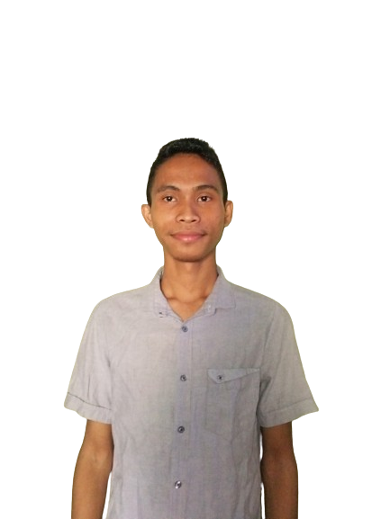

TO
GA
Hi! I'm
Toga Abdi Hayat
Halo! Nama saya Toga Abdi Hayat dan saya adalah seorang pengembang web dan Android. Saya memiliki kecintaan yang besar terhadap teknologi dan kreativitas. Sejak SMA, saya selalu tertarik dengan dunia komputer dan teknologi, dan telah mengejar hasrat saya untuk mempelajari dan mengembangkan aplikasi web dan Android yang inovatif. Dengan pengalaman saya dalam pengembangan web dan Android, saya telah memperoleh keterampilan yang kuat dalam pemrograman dan desain, serta kemampuan untuk menghadirkan solusi teknologi yang efektif dan berdaya guna.Terima kasih sudah mengunjungi portofolio saya!